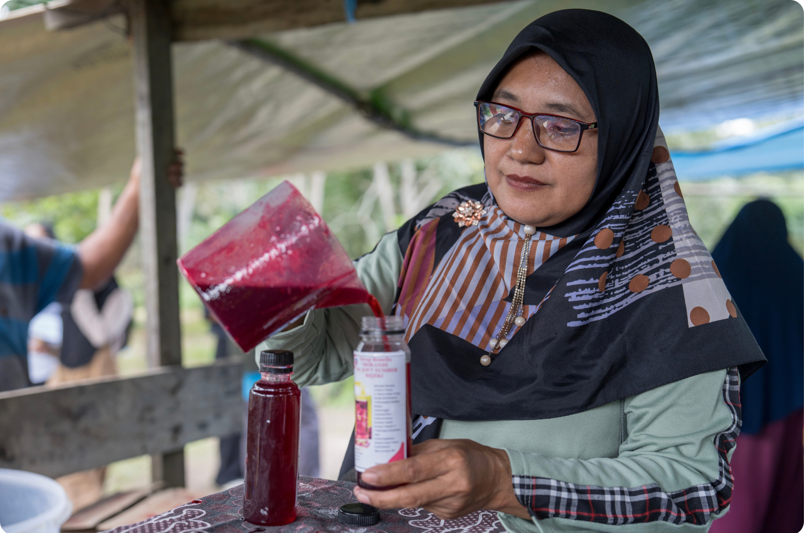

Business units serve as a space for the community to transform local potential into economic opportunities, while simultaneously creating room for women to actively participate in business development.
By managing business collectively, women learn to develop products, mamnage production, and strengthen their entrepreneurial skills, enabling local potential to generate economic benefits for their families and broader community.
Involvement in business activities helps women build confidence to take on greater roles in economic activities and contribute to their families and communities.
Previously underutilized materials and resources are increasingly recognized as opportunities to develop products with economic value.
The groups continuously improves product quality, from taste and recipes to packaging design, to make its products more appealing and competitive in the market.
Role allocation, financial record-keeping, inventory management, and regular evaluations help the group manage its business in a more structured and systematic way.

From local potential to inclusive economic opporuntities.
Changes begin with what is already around us. Local resources are transformed into products, while women learn to manage businesses, share responsibilities, and turn ideas into economic opportunities. One product can give rise to a range of derivative products, and one business can open doors to new opportunities. For women, entrepreneurship is not only about generating income, but also about building confidence, independence, and the ability to drive economic growth within their families and villages.